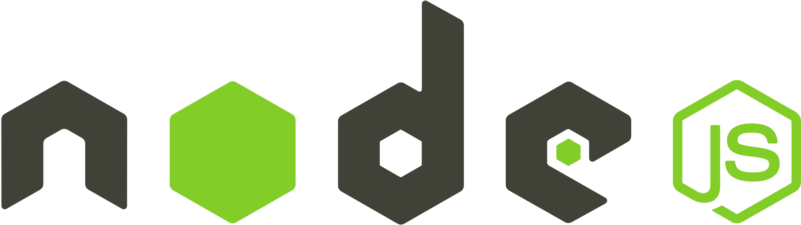

Igor Kordaczuk
My GitHub Projects

My GitHub Projects
Custom legal-tech platform developed for scalable generation and distribution of legal documents, initiated by baitlaw.com.


Laiw is a backend-driven system designed to automate the creation, customization, and sale of legal agreements for individual clients. The platform enables users to purchase legally reviewed, AI-assisted contracts at a significantly lower cost compared to traditional legal services.
Traditionally, preparing legal documents required direct interaction with a lawyer, leading to higher costs and limited scalability. Laiw addresses this by combining automation with legal oversight— documents are generated using OpenAI API and optionally reviewed or refined by legal professionals.
The goal of this project was to create a system that:
The startup operates in the legal-tech space, focusing on:
The business model is based on high-volume sales of legal templates enhanced with AI-generated personalization. Each purchased document is tailored to the customer’s input and optionally verified by a lawyer.
The system automatically generates legal documents immediately after order completion.
Workflow:
Key capabilities:
Each product (contract type) has a predefined prompt template that guides the AI in generating the appropriate document structure and content.
Generated contracts are produced in multiple formats to support both automation and manual review.
Formats:
The system uses LibreOffice for document conversion, enabling:
Lawyers can review, adjust, and finalize documents before delivery if required.
The person responsible for preparing the document has the ability to re-prompt it or manually upload a revised version.
The platform includes a management interface for handling contracts and their lifecycle.
Core functionalities:
Each contract instance is treated as a separate conversational thread with AI, meaning:
This enables iterative refinement rather than one-off generation.
Laiw operates as an online store for legal documents.
The system ensures that every completed order results in an immediately generated, personalized legal document.
In addition to predefined products, the platform offers a flexible contract creation tool.
This feature extends the platform beyond structured products into a general-purpose legal document generator.
Laiw is built as a modular backend system integrating:
Core components:
The backend acts as the central orchestration layer connecting payments, AI generation, and document management.
Developed for:
baitlaw.com
Legal-tech initiative focused on scalable delivery of legal services
for individual clients.